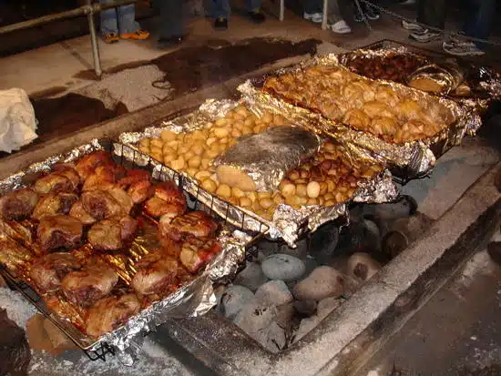
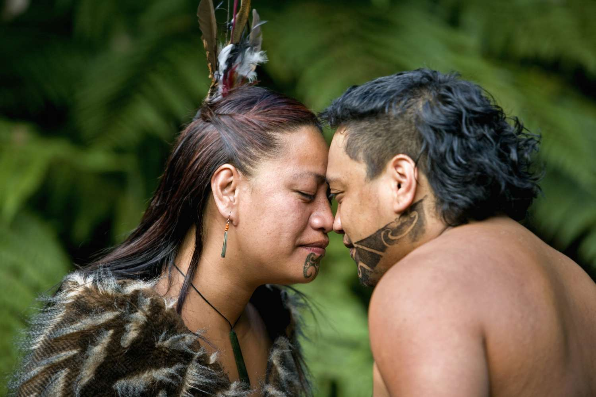
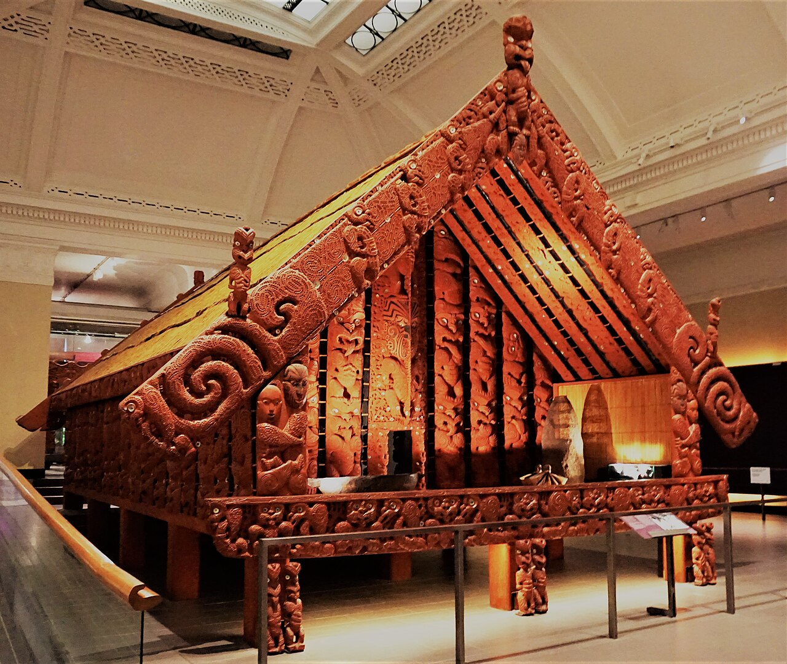
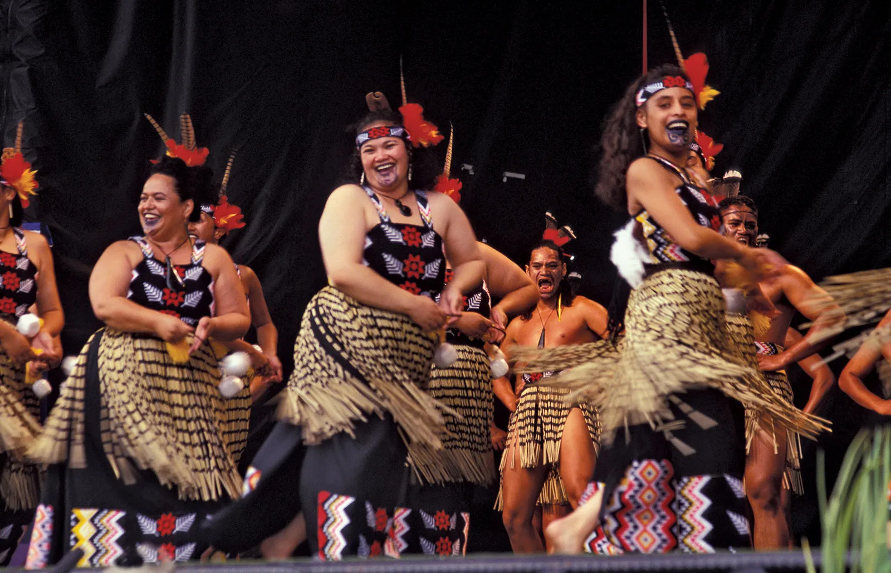

CULTURES
HAKA
Haka is a traditional war dance in the New Zealand that's performed in any ocassions like, rugby sports, basketball, volleyball, war, and event. It's a dance that gives them strength and momentum. Additionally, it's an art that's passed from generations to generations.
HANGI
Hangi is a traditional cooking method for food. It uses hot rocks, in an oven under the soil called pit oven. Hangi method is used on special occasions like, birthday, new year, christmas, and many events. It's a unique style of cooking that may intrigued the tourists.
GREETING KISS
New Zealand's people are called Kiwi, They have a unique kind of greetings which are kissing. This kind of action is very normal to them because it's their culture. So, if you're a tourist in New Zealand, you may encounter this kind of greeting.
WHARE WHAKAIRO
Whare Whakairo is a traditional arts in New Zealand in which, focused on wood carving, weaving and drawings for house decorations. It's very popular in the New Zealand, in fact many people are going to the country just to see Whare Whakairo design. It's recommended to the tourists who loves art.
MUSIC
Music is one of the culture of the Kiwis, It's very important to them to play music to honor their ancestors. New Zealand's music is influenced by European people, Their music is more on chanting and dancing with the help of their traditional instruments. Tourists who loves music are encouraged to listen to their culture songs to hear unique songs.